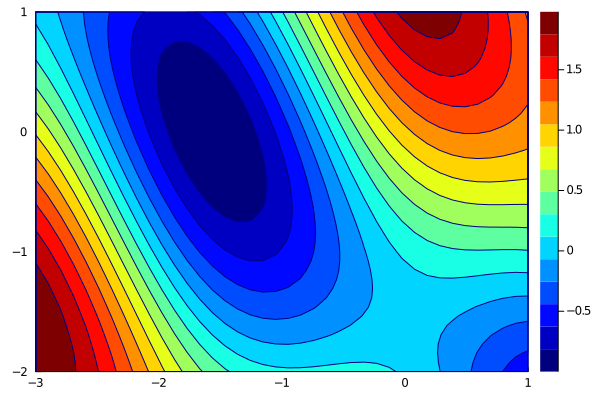
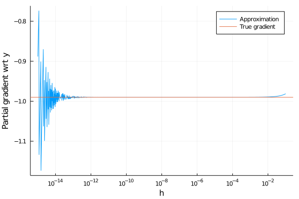
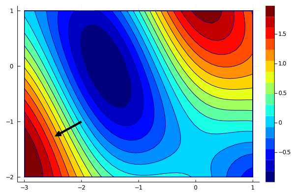
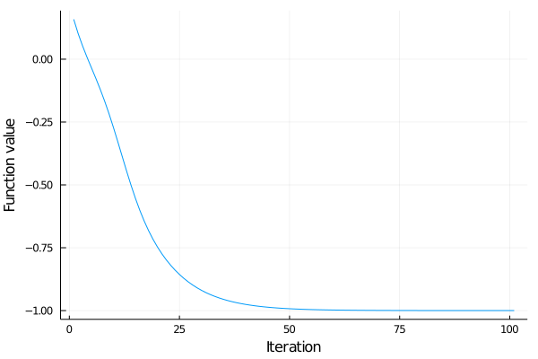
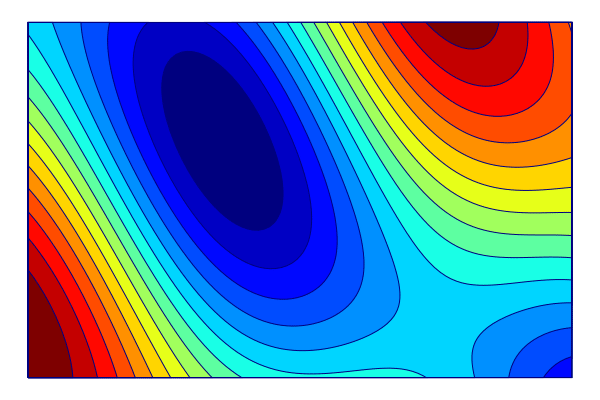

Unconstrained optimization
Unconstrained optimization means that we optimize a function on the whole space $X=\mathbb{R}^n$.
Theory of Unconstrained optimization
What do we look for when we minimize a function $f$ over some $X$? The optimal point would be a global minimum, which is a point $x\in X$ which satisfies
\[f(x) \le f(y) \text{ for all }y\in X.\]
This point is often very difficult to find. Sometimes we are able to find a local minimum, which is a global minimum on some small neighbourhood of $x$.
Consider a differentiable function $f$ over $X=\mathbb{R}^n$. If $x$ is its local minimum, then $\nabla f(x)=0$. Conversely, if $f$ is convex, then every point $x$ with $\nabla f(x)=0$ is a global minimum of $f$.
Points with $\nabla f(x)=0$ are known as stationary points. Optimization algorithms often try to find them with the hope that they minimize the function $f$.

This theorem does not hold if $X$ is not the whole space.
Most of optimizaton algorithms do not search for a global minimum but they instead apply some iterative procedure which looks for a stationary point. That means they try to find a point, where the gradient equals to zero. But what is the gradient? For a function $f:\mathbb{R}\to \mathbb{R}$, its gradient is defined by
\[f'(x) = \lim_{h\to 0}\frac{f(x+h)-f(x)}{h}.\]
For a mapping $f:\mathbb{R}^n\to \mathbb{R}^m$, its Jacobian is a matrix $\nabla f(x)$ of size $m\times n$ of partial derivatives
\[(\nabla f(x))_{i,j} = \frac{\partial f_i}{\partial x_j}(x) = \lim_{h\to 0}\frac{f_i(x_1,\dots,x_{j-1},x_j+h,x_{j+1},\dots,x_n)-f(x_1,\dots,x_n)}{h}\]
Gradient $\nabla f(x)$ of a function $f:\mathbb{R}^n\to\mathbb{R}$ should be of size $1\times n$ but it is commonly considered as $n\times 1$.
Functions to optimize are usually complex. Then the definition cannot be used to compute the gradient. Instead, the objective function $f$ is rewritten as a composition of simpler functions, these simpler functions are differentiated and the chain rule is applied to get $\nabla f$.
Consider two differentiable functions $f:\mathbb{R}^m\to\mathbb{R}^s$ and $g:\mathbb{R}^n\to\mathbb{R}^m$. Then its composition $h(x) := f(g(x))$ is differentiable with Jacobian
\[\nabla h(x) = \nabla f(g(x))\nabla g(x).\]
Visualization of gradients
For the numerical experiments, we will consider the following function
\[f(x) = \sin(x_1 + x_2) + \cos(x_1)^2\]
on domain $[-3,1]\times [-2,1]$.
Write a function g(x) which computes the derivative of $f$ at a point $x$.
Plot the contours of $f$ on the given domain. Use the optional argument color = :jet for better visualization.
Solution:
Function f(x) takes as an input a vector of two dimensions and returns a scalar. Therefore, the gradient is a two-dimensional vector, which we create by [?; ?]. Its components are computed from the chain rule.
f(x) = sin(x[1] + x[2]) + cos(x[1])^2
g(x) = [cos(x[1] + x[2]) - 2*cos(x[1])*sin(x[1]); cos(x[1] + x[2])]Since sometimes it is better to use notation $f(x)$ and sometimes $f(x_1,x_2)$, we overload the function f
f(x1,x2) = f([x1;x2])
f([0; 0])
f(0, 0)1.0 1.0
We use the Plots package for plotting. We create the discretization xs and ys of both axis and then call the contourf function.
using Plots
xs = range(-3, 1, length = 40)
ys = range(-2, 1, length = 40)
contourf(xs, ys, f, color = :jet)
Computation of gradients
The simplest way to compute the gradients is to use a finite difference approximation. It replaces the limit in
\[f'(x) = \lim_{h\to 0}\frac{f(x+h)-f(x)}{h}\]
by fixing some $h$ and approximates the gradient by
\[f'(x) \approx \frac{f(x+h)-f(x)}{h}.\]
Write a function finite_difference which computes the approximation of $f'(x)$ by finite differences. The inputs are a function $f:\mathbb R\to\mathbb R$ and a point $x\in\mathbb{R}$. It should have an optional input $h\in\mathbb{R}$, for which you need to choose a reasonable value.
Solution:
We just need to rewrite the formula above. Since the argument h is optional, it should be after ;. Its good default value is anything between $10^{-10}$ and $10^{-5}$. We specify x::Real as a sanity check for the case when a function of more variables is passed as input.
finite_difference(f, x::Real; h=1e-8) = (f(x+h) - f(x)) / hThis way of computing the gradient has two disadvantages:
- It is slow. For a function of $n$ variables, we need to evaluate the function at least $n+1$ times to get the whole gradient.
- It is not precise. We will show this in the next example.
Fix a point $x=(-2,-1)$. For a proper discretization of $h\in [10^{-15}, 10^{-1}]$ compute the finite difference approximation of the partial derivative of $f$ with respect to the second variable.
Plot the dependence of this approximation on $h$. Add the true derivative computed from g.
Solution:
To compute the partial derivative with respect to the second argument, we need to fix the first argument and vary only the second one. We create an autonomous function y -> f(-2, y) and another function fin_diff which for an input h computes the finite difference.
x = [-2; -1]
fin_diff(h) = finite_difference(y -> f(-2, y), -1; h=h)The true gradient is computed by g(x). It returns a vector of length two. Since we need only the partial derivative with respect to the second component, we select it by adding [2].
true_grad = g(x)[2]Now we create the discretization of $h$ in hs. When the orders of magnitude are so different, logarithmic scale should be used. For this reason, we create a uniform discretization of the interval $[-15,-1]$ and then use it as an exponent.
hs = 10. .^ (-15:0.01:-1)There are many possibilities of how to create the plot. Probably the simplest one is to plot the function fin_diff and then add the true gradient (which does not depend on $h$ and is, therefore, a horizontal line) via hline!
plot(hs, fin_diff,
xlabel = "h",
ylabel = "Partial gradient wrt y",
label = ["Approximation" "True gradient"],
xscale = :log10,
)
hline!([true_grad]; label = "True gradient")Another possibility is to use only one call for the plot function. The $x$ axis is hs, while for the $y$ axis we need to concatenate the true gradient true_grad and its finite difference approximation fin_diff.(hs) by hcat. It is also possible to use [? ?] but not [?, ?] or [?; ?] (try it). To get the same shape of the arrays, we need to repeat true_grad from a scalar to a vector of the same length as fin_diff. Since repeat requires the input to be an array, we need to create it by [true_grad].
data = hcat(fin_diff.(hs), repeat([true_grad], length(hs)))
plot(hs, data,
xlabel = "h",
ylabel = "Partial gradient wrt y",
label = ["Approximation" "True gradient"],
xscale = :log10,
)
We see that the approximation is good if the value $h$ is not too small or too large. It cannot be too large because the definition of the gradient considers the limit to zero. It cannot be too small because then the numerical errors kick in. This is connected with machine precision, which is most vulnerable to subtraction of two numbers of almost the same value. A simple example shows
\[(x + h)^2 - x^2 = 2xh + h^2\]
but the numerical implementation
julia> x = 1;
julia> h = 1e-13;
julia> (x+h)^2 - x^2
1.9984014443252818e-13
julia> 2*x*h + h^2
2.0000000000001e-13gives an error already on the third decimal point.
Finally, we show how the gradients look like.
Plot the contours of $f$ and its gradient at $(-2,-1)$.
Solution:
We use the same functions as before. Since we want to add a line, we use plot! instead of plot. We specify its parameters in an optional argument line = (:arrow, 4, :black). These parameters add the pointed arrow, the thickness and the colour of the line. Since we do not want any legend, we use label = "".
x = [-2; -1]
α = 0.25
x_grad = [x x.+α.*g(x)]
contourf(xs, ys, f; color = :jet)
plot!(x_grad[1, :], x_grad[2, :];
line = (:arrow, 4, :black),
label = "",
)
The gradient is perpendicular to the contour lines. This makes perfect sense. Since the gradient is the direction of steepest ascent, and since the contours have constant values, it needs to be like this. Try this with different values of $x$.
Numerical methods
This part introduces the most basic optimization algorithm called gradient (or steepest) descent.
Gradient descent
We learnt that the gradient is the direction of steepest descent. The straightforward idea is to move in the opposite direction. This gives rise to the gradient descent algorithm
\[x^{k+1} = x^k - \alpha^k\nabla f(x^k).\]
The stepsize $\alpha^k>0$ can be tuned as a hyperparameter.
In classical optimization, the usual terminology is:
- Variable is to be optimized.
- Parameter is external (fixed) such as material parameters.
In machine learning, the usual terminology is:
- Parameter is to be optimized.
- Hyperparameter is an external model parameter which is not optimized and needs to be tuned. The example is the steplength because the gradient descent finds a different solution for different steplength but it is not changed during the optimization.
The different terminology (and the fact that there are adaptive schemes to select the steplenght which should make it a parameter instead of a hyperparameter) makes the notation confusing.
Implement function optim which takes as inputs function $f$, its gradient, starting point $x^0$ and fixed stepsize $\alpha$ and runs the gradient descent. Its output should be the first 100 iterations.
This example is rather artificial because usually only the last iteration is returned and some stopping criterion is employed instead of the fixed number of iterations. We want to get all iterations to make visualizations.
Solution:
First we need to create an empty array into which we store the iterates. Then at every iteration we compute the gradient g(x), perform the update and save the new value of $x$.
function optim(f, g, x, α; max_iter=100)
xs = zeros(length(x), max_iter+1)
xs[:,1] = x
for i in 1:max_iter
x -= α*g(x)
xs[:,i+1] = x
end
return xs
endThe implementation does not use the values of $f$ but only its gradient $\nabla f$. Moreover, if the algorithm converges $x^k \to \bar x$, then passing to the limit in the gradient update results in $\nabla f(\bar x)=0$. Therefore, as most optimization methods, gradient descent looks for stationary points.
Before plotting the path taken by gradient descent, we create create_anim function which creates animations of path over the contour plot of f. From xlims and ylim, it creates discretizations xs and ys and then plots the contour plot as background. Since Animation requires updating a graph, we start with an empty graph and in a for loop over path, we push the new image to the animation. The final commands gif saves the animation into file_name.
function create_anim(f, path, xlims, ylims; file_name = "", fps=15)
xs = range(xlims...; length = 100)
ys = range(ylims...; length = 100)
plt = contourf(xs, ys, f, color = :jet, axis = false, ticks = false, cbar = false)
# adds an empty plot to plt
plot!(Float64[], Float64[]; line = (4, :black), label = "")
# extracts last plot series
plt_path = plt.series_list[end]
# creates the animation
anim = Animation()
for x in eachcol(path)
push!(plt_path, x[1], x[2]) # add new point to plt_grad
frame(anim)
end
gif(anim, file_name; fps = fps, show_msg = false)
return nothing
endWe now plot how gradient descent behaves.
Use the implementation of the gradient descent to minimize the function
\[f(x) = \sin(x_1 + x_2) + \cos(x_1)^2\]
from the starting point $x^0=(0,-1)$ and constant stepsize $\alpha=0.1$. Store all iterations into matrix xs.
Plot how the iterations evolve. You need to save the animation with the gif extension.
Use one line of code to evaluate the function values for all iterations xs (hint: you need to iterate via eachcol(xs) or eachrow(xs) depending on how you represent xs). Plot these values.
Solution:
We call optim written in the previous exercise and then create the animation.
x_gd = optim([], g, [0; -1], 0.1)
xlims = (-3, 1)
ylims = (-2, 1)
create_anim(f, x_gd, xlims, ylims; file_name = "anim1.gif")To plot the function values, we need to iterate over all columns. We use [? for x in eachcol(x_gd)] and apply f(x) instead of ?. Another (more complicated) way is to iterate over indices instead of vectors and write [f(x_gs[:,i]) for i in 1:size(x_gd,2)].
f_gd = [f(x) for x in eachcol(x_gd)]
plot(f_gd, label="", xlabel="Iteration", ylabel="Function value")
The convergence looks very nice, and the function value decreases. First, the decrease is faster, but when the iterations get closer to the minimum, it slows down.
What happens if we choose a different stepsize though? Let us try with two different values. First let us try $\alpha=0.01$.
x_gd = optim([], g, [0; -1], 0.01)
create_anim(f, x_gd, xlims, ylims; file_name = "anim2.gif")We see that when the stepsize is reduced, the steps are shorter and we would need to increase the number of iterations (and thus time) to converge. When the stepsize is larger, say $\alpha=1$, the situation is different.
x_gd = optim([], g, [0; -1], 1)
create_anim(f, x_gd, xlims, ylims; file_name = "anim3.gif")For a large stepsize, the algorithm gets close to the solution and then starts jumping around. If we further increase the stepsize, it will even diverge to infinity. Try it.
Adaptive stepsize
To handle this numerical instability, safeguards are introduced. One of the possibilities is the Armijo condition which automatically selects the stepsize. It looks for $\alpha^k$ which satisfies
\[f(x^k - \alpha^k\nabla f(x^k)) \le f(x^k) - c \alpha^k \|\nabla f(x^k)\|^2.\]
Here $c\in(0,1)$ is a small constant, usually $c=10^{-4}$. Since the left-hand side is the function value at the new iterate $x^{k+1}$, the Armijo condition ensures that the sequence of function values is strictly decreasing. This prevents oscillations.
The implementation of optim(f, g, x, α; max_iter=100) from the exercise above is rather stupid because it does not allow to modify the selection of the step. The simplest fix would be to include if conditions inside the function. However, this would result in a long function, which may be difficult to debug and modify. A more elegant solution is to create an abstract class
abstract type Step endand for each possible step selection method implement a optim_step method, which selects the step. First, we create the gradient descent class GD as a subclass of Step by
struct GD <: Step
α::Real
endIt is a structure with parameter α. Then we create the optim_step function by
optim_step(s::GD, f, g, x) = -s.α*g(x)Due to the first input argument, it will be called only for the GD stepsize. To access the parameter α, we need to retrieve it from the structure by s.α. Now we can modify the optim function by
function optim(f, g, x, s::Step; max_iter=100)
xs = zeros(length(x), max_iter+1)
xs[:,1] = x
for i in 1:max_iter
x += optim_step(s, f, g, x)
xs[:,i+1] = x
end
return xs
endThe specification of the input s::Step allows for any subclass of the abstract class Step. Using this implentation results in
gd = GD(0.1)
x_opt = optim(f, g, [-1;0], gd)
create_anim(f, x_opt, xlims, ylims; file_name = "anim4.gif")We obtained the same results as in the previous case. This is not surprising as the code does exactly the same things; it is only written differently. The next exercise shows the power of defining the Step class.
Implement the Armijo subclass of the Step class. It should have two parameters c from the definition and α_max which will be the initial value of $\alpha$. The value $\alpha$ should be divided by two until the Armijo condition is satisfied.
Then run the optimization with the Armijo selection of the stepsize and plot the animation.
Solution:
We define the class in the same way as for GD:
struct Armijo <: Step
c::Real
α_max::Real
endFor the search for the stepsize, we first save the values for the function value $f(x)$ and the gradient $\nabla f(x)$. If we do not do this, it will be recomputed at every step. Then we initialize the value of $\alpha$ and run the while loop until the Armijo condition is satisfied. We added a termination condition (also a safe check) α <= 1e-6 to prevent the loop for continuing indefinitely.
function optim_step(s::Armijo, f, g, x)
fun = f(x)
grad = g(x)
α = s.α_max
while f(x .- α*grad) > fun - s.c*α*(grad'*grad)
α /= 2
if α <= 1e-6
warning("Armijo line search failed.")
break
end
end
return -α*grad
endThen we create the Armijo object and run the optimization again.
gd = Armijo(1e-4, 1)
x_opt = optim(f, g, [0;-1], gd)
create_anim(f, x_opt, xlims, ylims; file_name = "anim5.gif")
Since the Armijo condition determines the optimal stepsize automatically, the convergence is much faster than for gradient descent. Moreover, it is not necessary to specify the stepsize (which may cause small convergence of even divergence for gradient descent). The price to pay is that every iteration needs to perform several function evalutions, which is not the case for standard gradient descent.